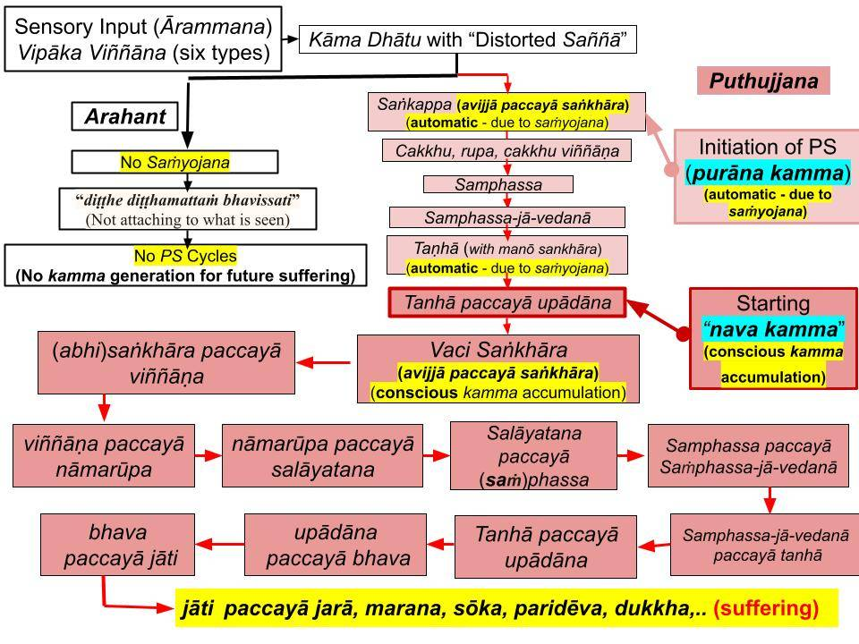

Free will is at the core of Buddhism (Buddha Dhamma). Without free will, attaining Nibbāna is not possible. This post discusses the difference between automatic /unconscious and deliberate/willful saṅkhāra generation.
November 3, 2018; rewritten April 4, 2025
Introduction
1. Free will is at the core of Buddhism (Buddha Dhamma). If one does not have free will (and, thus, determination), one cannot attain Nibbāna.
- The applicability of free will should be evident in a mundane sense. Free will determines (within certain limits) whether one will become a successful businessman or a master thief.
- When I say "within limits," we can only compare situations for two people born with comparable capabilities. For example, one born with an "ahetuka birth" (e.g., born with brain defects) will never be able to achieve much success.
- However, a person born with a "normal level of intelligence" (tihetuka or dvihetuka births) can make decisions that can lead to various possible outcomes in the future. For example, one could become a great scientist or a ruthless dictator. Both require a "sharp mind." See #6 of "Sutta Interpretation – Uddēsa, Niddēsa, Paṭiniddēsa."
2. In the following video by Sam Harris, we can see where modern philosophers get stuck on the issue of free will.
- He agrees that things happen due to causes, but he cannot figure out the causes of many things. He says, "You don't pick your parents; you don't pick your body...". Yet, we do that via the rebirth process, which is not in Harris's materialistic worldview. That is explained with Paṭicca Samuppāda in Buddha Dhamma. Rebirths are determined by the causes and conditions associated with a lifestream; see "What Reincarnates? – Concept of a Lifestream" and "Uppatti Paṭicca Samuppāda (How We Create Our Own Rebirths)."
- As long as he does not believe in rebirth, Sam Harris will never be able to understand those "missing causes." The rebirth picture provides those "missing causes." Laws of kamma (causes and effects) operate over many rebirths. One cannot analyze one's current life in isolation.
Background Material in Buddha Dhamma
3. To fully explain the laws of kamma, we must include rebirths in all possible existences, including animal and Deva realms.
- Nature treats every sentient being fairly, according to what they have done in the past.
- Based on one's gati at the moment of death, one is born into a given existence (human, animal, Deva, etc.), a family (good, bad), and different conditions (healthy, handicapped, poor, etc.) See "Gati Sutta (AN 9.68)."
- One's gati is based on the types of saṅkhāra that one cultivates (basically how one thinks, speaks, and acts).
4. Another key point is that "kammic energy" that leads to future results (vipāka) is generated in one's javana citta. Don't be put off by that word. Javana cittās are thoughts that arise in one's mind when generating conscious thoughts about speaking/doing moral or immoral deeds.
- Mano, vaci, and kāya saṅkhāra lead to mano, vaci, and kāya kamma that can lead to future vipāka (including rebirths), ONLY IF those actions or speech are either moral (good vipāka) or immoral (bad vipāka).
- See "Sankhāra – What It Really Means."
Conscious and Automatic Saṅkhāra Generation
5. Mano saṅkhāra are conscious defiled thoughts. Vaci saṅkhārās are responsible for our defiled speech (either out loud or just to ourselves). When we engage in moral/immoral actions, we move our bodies with kāya saṅkhāra that arise in our mind (basically in the gandhabba). We have control over all three types and generate them consciously.
- In contrast, thoughts arising automatically with a sensory input are saṅkappa. They are a weak form of saṅkhāra called "abhisaṅkhāra."
- That is the difference between saṅkappa (which arise without our DIRECT control) and mano, vaci, and kāya saṅkhāra (which we have control over) that lead to mano, vaci, and kāya kamma.
- There is no significant javana power (to bring vipāka in future rebirths) in saṅkappa. In contrast, manō, vaci, and kāya saṅkhāra generate javana power. The strength of kammic energy created increases in the following order: manō, vaci, kāya saṅkhāra.
Purāna and Nava Kamma Stages of a Sensory Event
6. Weak Kamma generation (with initial abhisaṅkhāra called saṅkappa) occurs in the “purāna kamma” stage. They are weak and cannot bring vipāka in the future.
- Strong kamma that can bring future vipāka (including rebirth) will occur only if javana cittas arise within the “nava kamma” stage where mano, vaci, and kāya kamma are done.
- The following chart provides the basic concepts of the “purāna kamma” and “nava kamma" stages (which is another representation of the Paṭicca Samuppāda process). They do not occur in an Arahant.
- The chart is discussed in "Purāna and Nava Kamma – Sequence of Kamma Generation." A systematic analysis is in the section "Worldview of the Buddha."

Download/Print: “Purana and Nava Kamma – 1-Revised“
7. Only Saṅkappa arise in the “purāna kamma” stage. They occur automatically due to bonds to the rebirth process (saṁyojana).
- Thus, the saṅkappa generation does not happen (and Paṭicca Samuppāda does not operate) for an Arahant who has broken all saṁyojana. Once the saṅkappa generation stops, the mano, vaci, and kāya saṅkhāra generation stop, too, as we can see from the above chart.
- The ten saṁyojanās are directly related to the five gati discussed in the "Gati Sutta (AN 9.68)." For example, when the first three saṁyojana are eliminated, the first three types of gati (that lead to rebirth in the apāyās) are also removed.
- What is summarized above is a deeper aspect of Buddha's teachings. Saṅkappa generation occurs in the "purāna kamma" stage in a sensory event, and mano, vaci, and kāya saṅkhāra generation (leading to mano, vaci, and kāya kamma) occurs in the "nava kamma" stage.
Saṅkhāra Can Arise With or Without Conscious Thinking
8. As we have discussed before, the word "saṅkhāra" comes from “saṅ” + “khāra” or actions that involve “saṅ“; see, “What is “San”? Meaning of Sansāra (or Samsāra)“.
- “Saṅ” is responsible for getting things done to live the current life (even everyday activities).
- However, if they involve conscious moral/immoral thoughts, that can bring results (vipāka) in future lives.
- Kammās are actions with a defiled mind (done with saṅkhāra that arise in mind). Actions without rāga, dosa, or moha in mind are not called kamma.
- Such moral or immoral strong kamma -- done with mano, vaci, and kāya saṅkhāra -- are the ones that lead to kamma vipāka in the future (either in this life or in future lives).
- Saṅkappās are a weak form of saṅkhāra called "abhisaṅkhāra." I may have labeled "abhisaṅkhāra" as "strong saṅkhāra" in some old posts, and that is incorrect. However, repeated generation of abhisaṅkhāra occurs in mano, vaci, and kāya saṅkhāra, making them potent.
Key Idea: Mano, Vaci, and Kāya Sankhārās are Willful
9. Let us look at some examples now.
- Thinking about going to the bathroom is NOT a vaci saṅkhāra because it is kammically neutral, i.e., no defiled thoughts involved. Walking to the kitchen to get a glass of water is NOT a kāya saṅkhāra because it does not involve a defiled mind with rāga, dosa, or moha.
- Thinking about killing a human being involves vaci saṅkhāra with high kammic consequences; actual killing is made with kāya saṅkhāra. Those can lead to rebirth in the apāyās because both are based on immoral or apuñña abhisaṅkhāra (or apunnābhisaṅkhāra).
- On the other hand, thoughts responsible for good speech and actions or puñña abhisaṅkhāra (or punnābhisaṅkhāra) have good kammic consequences and can lead to “good births” (human, Deva, or Brahma). Even more importantly, they are essential for making progress on the Path.
- Details in "Six Root Causes – Loka Samudaya (Arising of Suffering) and Loka Nirodhaya (Nibbāna)."
Connection Between Saṅkhāra and Cetasika
10. I keep repeating these because it is imperative to understand these fundamental ideas.
- All saṅkappa and saṅkhāra arise in the mental body (gandhabba) and NOT in the brain.
- Then, the brain helps to put those into action/speech (i.e., moving body parts).
- Good kamma that will have good vipāka in the future is done with saṅkhāra that have sōbhana cetasika (compassion, non-greed, etc.). Bad kammā that will have the corresponding bad vipāka in the future is done with abhisaṅkhāra that have asōbhana cetasika (anger, greed, etc.); see "Cetasika (Mental Factors)."
Saṅkappa Arise Automatically (Without Conscious Thinking)
11. Saṅkappās automatically arise in the mind due to a sensory input based on one’s unbroken saṁyojana (bonds to the rebirth process); see the above chart.
- We don’t consciously experience those initial saṅkappa that arise in the “purāna kamma” stage. We only experience mano, vaci, and kāya saṅkhāra that arise in the “nava kamma” stage.
- The processes involved in the “purāna kamma” and “nava kamma” stages are summarized in many suttās. See, for example, "Saññānānatta Sutta (SN 14.7)". This sutta is discussed in #7 through #9 in "Contamination of a Human Mind – Detailed Analysis."
Saṅkappa Arise Based on Saṁyojana
12. As we discussed many times, we get “attached” to something AUTOMATICALLY (“purāna kamma” stage) based on our gati and arise as saṅkappa. It is essential to understand the concept of "gati" (character/habits); see "The Law of Attraction, Habits, Character (Gati), and Cravings (Āsava)."
- (Gati is closely related to saṁyojana. As the ten saṁyojana are eliminated, the five main gati are eliminated too: "Gati Sutta (AN 9.68).")
- If the attachment in the “purāna kamma” stage is strong enough, the mind will start thinking about it consciously in the “nava kamma” stage, and mano, vaci, and kāya saṅkhāra arise (and we become aware of them.)
- Now, we can be mindful, think about the consequences of such thoughts, and stop them as soon as we become aware of this “attachment” to something. Therefore, we can stop such thoughts at the vaci saṅkhāra stage; see “Correct Meaning of Vacī Sankhāra."
Bypassing the Purāna Kmma Stage
13. To stop saṅkappa/saṅkhāra generation in the purāna kamma/nava kamma stages, we must stop saṅkappa generation in the purāna kamma stage.
- However, as discussed above, we cannot control the “purāna kamma” stage, which runs automatically based on the “distorted saññā.” See "Fooled by Distorted Saññā (Sañjānāti) – Origin of Attachment (Taṇhā)."
- Yet, the Buddha figured out how to bypass the purāna kamma stage by controlling the nava kamma stage. That requires learning key concepts like the Four Noble Truths, Paṭicca Samuppāda, Tilakkhana, etc.
- When one understands that, one becomes a Sotapanna ("Sandiṭṭhiko"); see "Pāth to Nibbāna – Learning Dhamma to Become a Sotapanna" and "Sandiṭṭhiko – What Does It Mean?."
14. Please read #13 again. That is the key to understanding why we have "free will" and how we can stop suffering altogether.
- We have total control over the “nava kamma” stage, even though we don't have direct control over the “purāna kamma” stage. Controlling the “nava kamma” stage leads to stopping the “purāna kamma” stage.
- However, one must be in the human realm or higher to exercise this "free will." Even those humans with an "ahetuka birth" do not have enough wisdom to exercise free will.
- Those in the apāyās also have "ahetuka births" and, thus, do not have free will.
Key Concepts in Satipaṭṭhāna and Ānapānasati
15. Therefore, the concept of free will becomes clear if one can understand the concepts of unconscious saṅkappa and conscious manō, vaci, and kāya saṅkhāra.
- To have a firm grasp of Satipaṭṭhāna and Ānapāna meditations, it is essential to understand what is meant by "mindfulness," which happens in the "nava kamma" stage where we have control over manō, vaci, and kāya saṅkhāra generation.
- Even though we don't have control over the saṅkappa generation in the "purāna kamma" stage, the Buddha found a way to bypass that stage. See "Path to Nibbāna – The Necessary Background ."
16. The bottom line is this: Once we become aware of an action we are about to take, we have the freedom to proceed or stop it.
- We should stop any wrong actions we are about to do and continue with any good ones. That is the basis of Satipaṭṭhāna and Ānapāna meditations.
- We must cultivate the habit of "catching one's response early enough." "Being mindful" is just that; see, "6. Anāpānasati Bhāvanā (Introduction)" and "Maha Satipaṭṭhāna Sutta."
- Once we have reasonable control of the "nava kamma" stage, we can contemplate the key concepts (Four Noble Truths, Paṭicca Samuppāda, Tilakkhana, etc.) in Buddha's teachings and bypass the "purāna kamma" stage to get to the “Satipaṭṭhāna Bhumi” and bypass the “distorted saññā.” It is the “distorted saññā” that makes us make wrong decisions about sensory inputs.
- See #1 of "Path to Nibbāna – The Necessary Background."
Libet Experiments on Free Will
17. Scientists misinterpret the experiments on the famous "Libet experiments" simply because they believe that the mind resides in the brain. Therefore, they wrongly conclude that the "brain activity starts" before one makes a decision; see, "Neuroscience says there is no Free Will? – That is a Misinterpretation!".
- Libet's experiment is straightforward: A person randomly decides (with no pre-planning) to press a button at some point, and scientists monitor that person's brain activity. They conclude that the brain starts the "finger moving" process before the person decides to move the finger!
- Buddha's teachings explain this simply: It is the gandhabba ("mental body") that decides to press the button. Brain activity starts with our conscious decision to press the button.
- The time lag is for that instruction to reach the brain and then for the brain to get the necessary muscles to move. See "Brain – Interface between Mind and Body."
18. Gandhabba, or the "mental body" or the "manomaya kāya," is a critical concept neglected in the current Theravāda texts.
- The physical body is just a shell controlled by the mental body.
- The death of the physical body is not the end of life. The mental body comes out of the dead physical body and can get into a womb to make another physical body.
- See "Buddhist Explanations of Conception, Abortion, and Contraception."
- Several subsections on the website discuss the gandhabba, or the "mental body" concept: "Mental Body – Gandhabba," "Gandhabba (Manomaya Kaya)," and "The Grand Unified Theory of Dhamma."